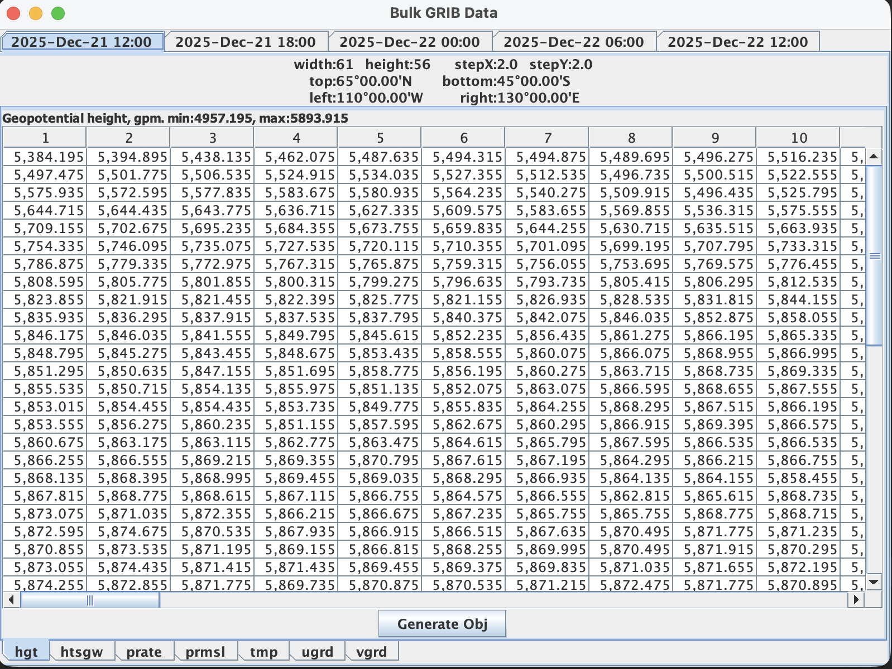
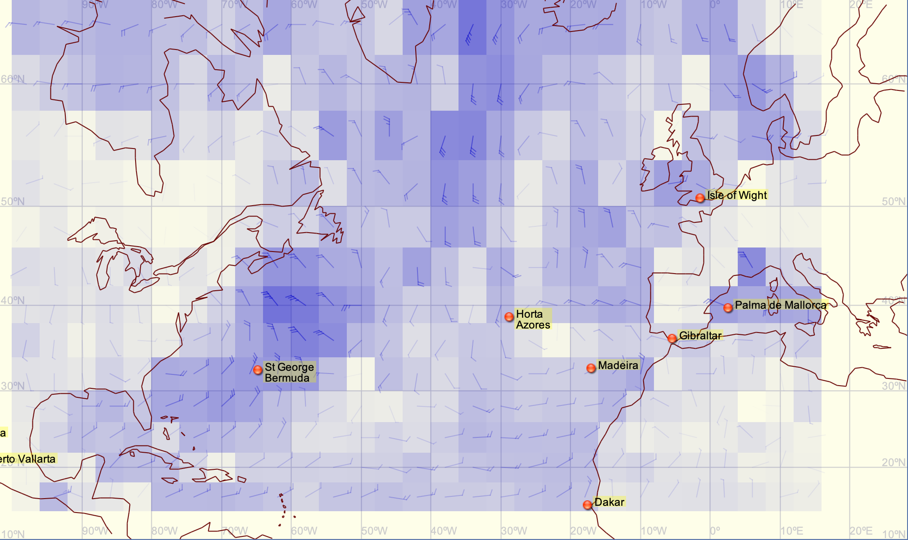
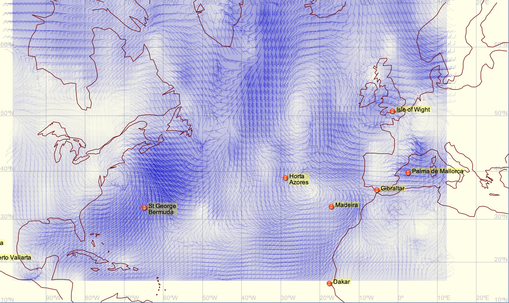
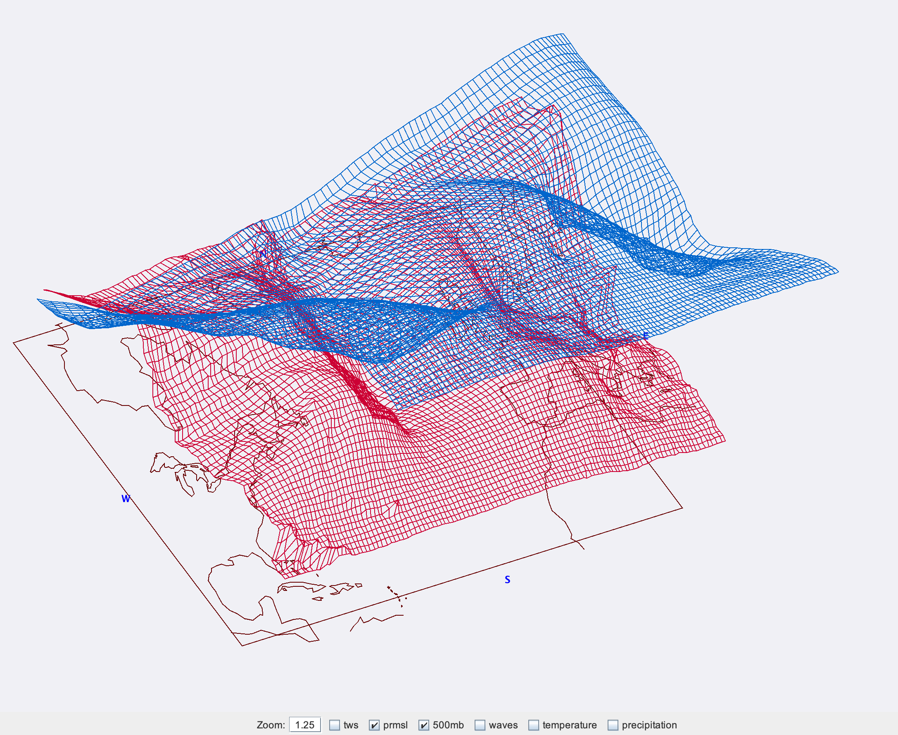
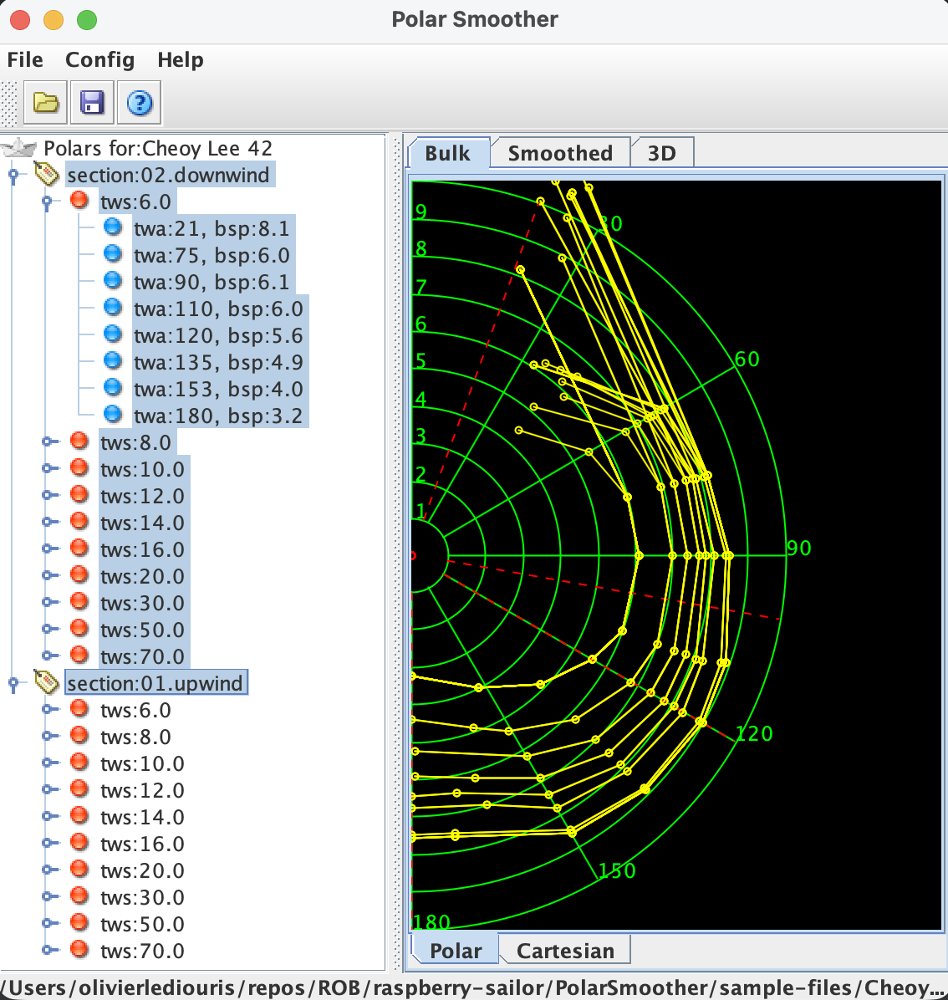
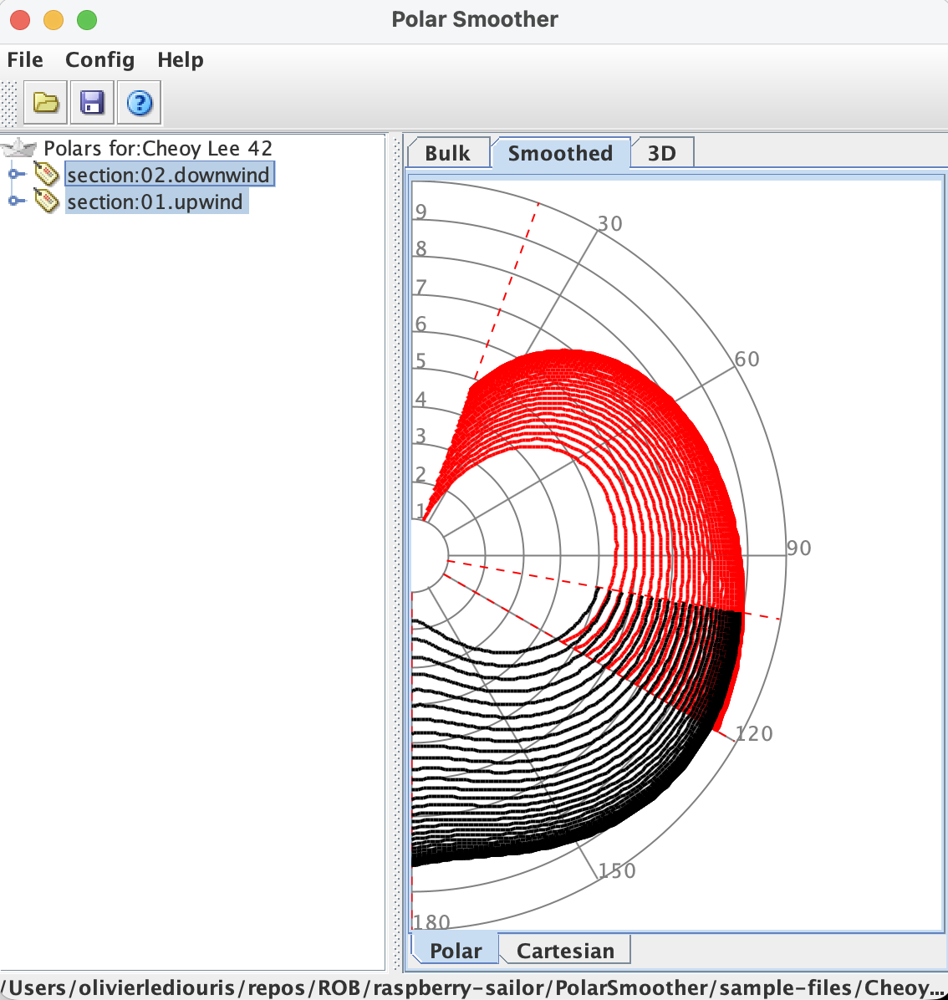
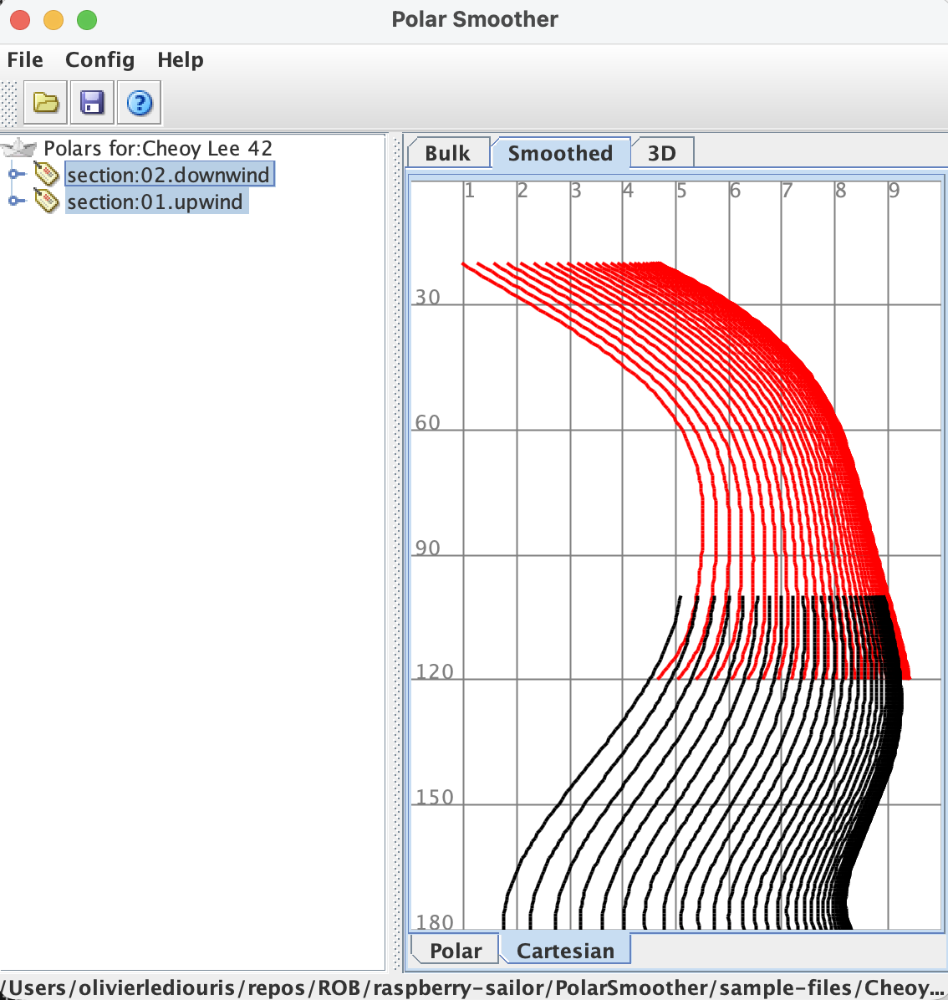
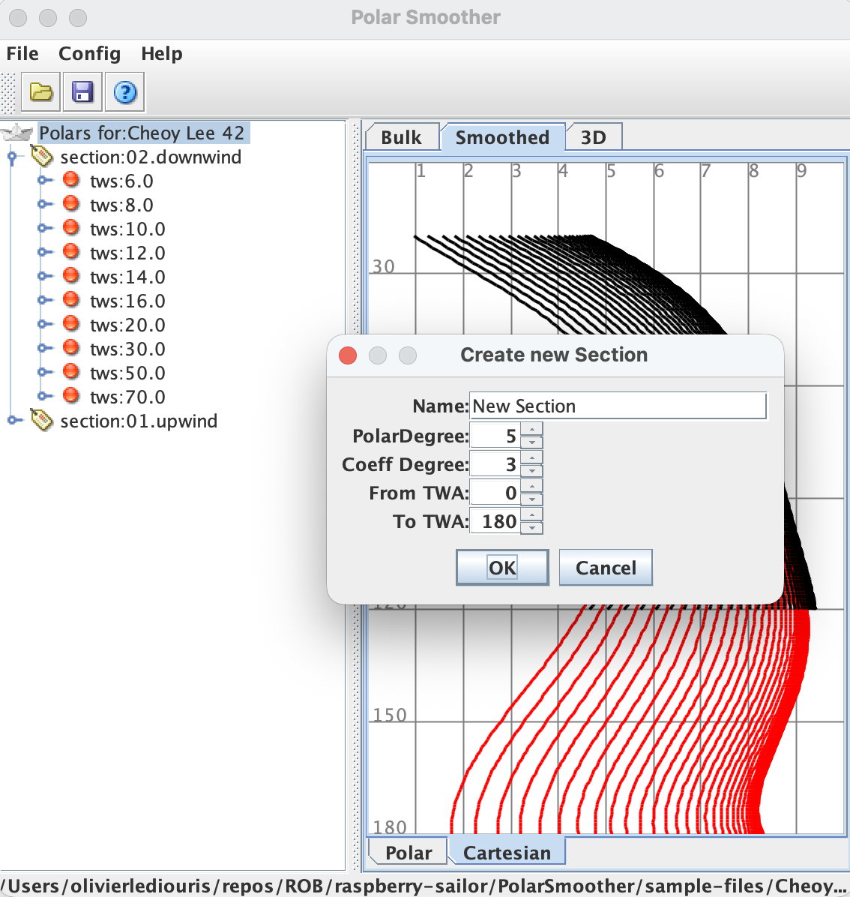
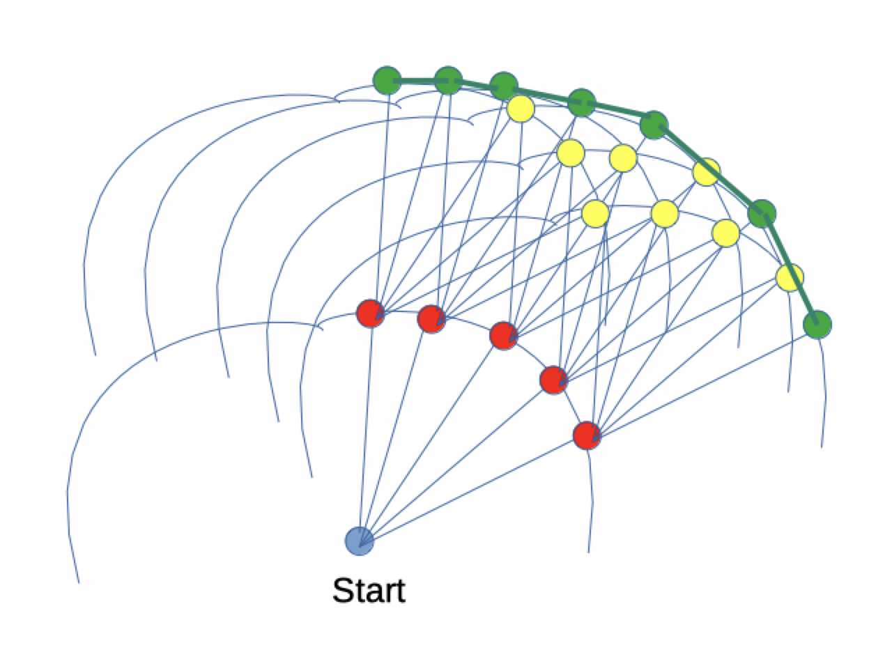

Traduisible et imprimable

La version 'écran' contient des liens qui n'apparaissent pas dans la version imprimable, qui diffère aussi de l'autre par sa mise en page.
On veut en définitive faire un routage pour le bateau, c'est à dire de déterminer la route optimale entre un point de départ et un point d'arrivée, en tenant compte des conditions météorologiques (vent, courant, vagues) et des performances du bateau (polaires).
Pour cela, il faut disposer de plusieurs éléments :
- Les polaires du bateau
- Les données météorologiques, généralement au format GRIB
- Un algorithme de routage
Ce document présente ces différents éléments, et donne quelques pistes pour réaliser un tel travail.
L'acronyme GRIB signifie "GRIdded Binary" (binaire en grille).
C'est un format de fichier binaire standard pour la diffusion de données météorologiques.
Il est utilisé pour transmettre des prévisions météorologiques, notamment les vents, la pression atmosphérique, les températures, etc., sur une grille géographique
et temporelle.
Pour obtenir des fichiers GRIB, il faut addresser une requête à un serveur de données météorologiques, en précisant la région géographique, la période et les paramètres souhaités.
Pour la zone, et la période, on précisera aussi le maillage (résolution) de la grille.
Exemple :
GFS:65N,45S,130E,110W|2,2|0,6..24|PRMSL,WIND,HGT500,TEMP,WAVES,RAIN
La requête ci-dessus concerne :
- la zone géographique délimitée par les coordonnées 65N,45S,130E,110W (coin supérieur gauche 65N-130E, coin inférieur droit 45S-110E), c'est l'Océan Pacifique
- un maillage de 2° en latitude et 2° en longitude
- des prévisions à 0h, 6h, 12h, 18h et 24h (toutes les 6H, pendant 24H)
- les paramètres suivants : pression au niveau de la mer (PRMSL, en anglais PRessure at Mean Sea Level), vent (WIND), hauteur géopotentielle à 500 hPa (HGT500), température (TEMP), vagues (WAVES) et précipitations (RAIN)
La taille du fichier GRIB espéré est bien évidemment fonction de la taille de la zone, du maillage, de la période et des paramètres demandés.
Plus le maillage est serré, plus les paramètres sont nombreux, plus la période est longue, plus le fichier sera volumineux.
Note :
Afin de diminuer la taille des fichiers à recevoir - on n'a pas toujours un débit Internet infini - on peut jouer sur le maillage, et procéder ensuite à un lissage des données.
Ça n'est certes pas aussi précis, mais bien souvent le résutat est suffisant pour la navigation de plaisance.
Le fichier reçu après la requête est un fichier binaire (numérique), illisible en l'état.
Mais son contenu peut être visualisé avec un logiciel adapté (on y reviendra).
Le format de son contenu peut sans ausun doute être compare à celui d'une feuille Excel (on dit feuille de calcul !), avec des lignes et des colonnes, chaque cellule contenant une valeur pour un paramètre donné (vent, pression, température, etc) à une
position géographique (latitude, longitude) et à un instant donné (heure de la prévision).

Au dessus, les onglets correspondant aux différentes dates et heures, en dessous, les onglets des paramètres disponibles.
Voyons la requête suivante :
GFS:65N,14N,100W,10E|4,4|0,12..168|PRMSL,WIND,HGT500,TEMP,WAVES,RAIN
On y remarque que le maillage est de 4° en latitude et 4° en longitude, au lieu de 2° dans l'exemple précédent,
et qu'on aura un grib toutes les 12 heures, au lieu de 6 précédemment.
Ceci devrait alléger la taille du
fichier à recevoir.
En revanche, la définition est moindre, ainsi qu'on peut le voir ici :

On voit bien que la définition du vent est moins bonne.
Le lissage peut résoudre cette situation, en appliquant un lissage de facteur 4 (on divise chaque cellule en 4×4=16).

Ce lissage est appliqué ici au vent, il s'appliquera de même aux autres paramètres (PRMSL, 500MB, RAIN, TEMP, etc).
Le lissage appliqué ici est géographique, il peut aussi s'appliquer dans le temps, pour passer d'un intervalle de 12 heures à un intervalle de 3 heures, par exemple.
Il peut aussi parfois être intéressant d'afficher les données du GRIB en 3D :

Le standard des fichiers GRIB a deux versions (1, et 2). Il convient pour les exploiter de savoir quelle est la version du fichier reçu, et de disposer d'un logiciel adapté.
Envoi d'une requête
On peut enover la requête ci-dessus à query@saildocs.com, par email.
Le sujet de l'email n'a pas d'importance, le corps du message contient la requête, en plain text.
Par exemple envoyer cette requête par email à Saildocs.
La réponse arrive en général en quelques minutes - voire secondes, avec un fichier GRIB en pièce jointe.
Plusieurs services permettent d'obtenir des GRIB, par exemple :
Note : Si certains des liens ci-dessus ne fonctionnent pas, c'est sans doute parce que je ne sais plus quel cornichon (orange) a coupé les crédits du NOAA (services météo américains).
Les polaires d'un bateau sont des courbes qui représentent la vitesse du bateau en fonction de l'angle et de la force du vent (apparent).
Le vent apparent est celui qui fait avancer un voilier, c'est la combinaison du vent réel et de la vitesse du bateau.
Le vent apparent dépendant du vent réel et de la vitesse du bateau, les polaires permettent de déterminer la vitesse du bateau pour une direction et une force de vent données.
Voir ici pour un outil de lissage des polaires.
Les polaires sont des fonctions de deux variables : l'angle du vent apparent (AWA, Apparent Wind Angle) et la force du vent apparent (AWS, Apparent Wind Speed).
Elles peuvent fréquement être représentées par une ou plusieurs fonctions polynômes.
On peut pour élaborer les polaires d'un bateau utiliser des données de navigation réelles, enregistrées lors de sorties en mer.

On peut ensuite choisir le degré des polynômes à utiliser pour le lissage, et utiliser la méthode des moindres carrés
(voir ici) pour ajuster les polaires aux données brutes.
On appelle ces courbes des "polaires" car elles sont souvent représentées dans un système de coordonnées polaires, où l'angle est l'angle du vent apparent, et la distance au centre est la vitesse du bateau.
Elles peuvent cependant être représentées dans un système de coordonnées cartésiennes, où - par exemple - l'axe des Y représente l'angle du vent apparent, et l'axe des X la vitesse du bateau.
C'est moins intuitif...

Coordonnées polaires

Coordonnées cartésiennes

Degrés des polynômes
On voit sur la troisième image le degré choisi pour les polynômes.
On distingue le degré des polaires (5 ci-dessus), et le degré des coefficients (3 ci-dessus).
Le degré des polaires définit la complexité de la courbe, le degré des coefficients définit le polynôme qui permettra de déterminer les coefficients de la polaire pour une force de vent donnée.
Ainsi, les polaires auront la forme
$$ V_{boat} (x, AWS) = a_{AWS}.x^5 + b_{AWS}.x^4 + c_{AWS}.x^3 + d_{AWS}.x^2 + e_{AWS}.x^1 + f_{AWS} $$
où $ x $ est l'angle du vent apparent, et les coefficients $a_{AWS}$, $b_{AWS}$, $c_{AWS}$, $d_{AWS}$, $e_{AWS}$ et $f_{AWS}$ dépendent de la force du vent apparent (AWS), suivant une fonction polynôme de degré 3 :
$$ a_{AWS} = A.AWS^3 + B.AWS^2 + C.AWS + D, etc. $$
Ainsi, pour tout angle de vent ($ x $ ou $ AWA $) et pour toute force de vent ($ AWS $) donnée, on peut calculer la vitesse du bateau ($ V_{boat} $).
Les polaires ainsi générées peuvent aussi être visualisées en 3D.
Afin de minimiser la quantité de calculs à effectuer lors du routage, les polaires peuvent être représentées en fonction des degrés choisis ci-dessus (degré des courbes polaires, et degrés utilisés pour le lissage des coefficients).
Comme par exemple ici, en XML, des polaires de degré 5, et des coefficients lissés par un polynôme du 3e degré :
Il n'existe pour l'instant pas de standard pour ce genre de données. Il convient "juste" que cette représentation soit cohérente avec le logiciel qu'on utilise.
Les coefficients ci-dessus sont ensuite utilisés pour générer les polaires qui seront exploitées lors du calcul d'un routage :
Voyez ci-dessus les intervalles de force de vent (tws), et d'angle de vent (twa). On attaque ces polaires avec un angle et une force de vent (réels ici),
et on en sort la vitesse du bateau dans ces conditions.
Note : On peut avoir à pratiquer une interpolation pour la force et l'angle du vent, similaire à celle qu'on voit sur les représentations en 3D.
Ce genre de données peut aussi très bien être representé comme sous la forme d'un feuille de calculs :
TWA verticalement, TWS horizontalement.
Attention, c'est là que les choses se compliquent un peu..., tout s'assemble !
On a vu précédemment comment obtenir les données météorologiques (GRIB), et comment définir les performances du bateau (polaires).
Il reste à déterminer un algorithme de routage, qui permettra de trouver le chemin optimal entre un point de départ et un point d'arrivée,
en tenant compte des conditions météorologiques et des performances du bateau.
Ceci fait intervenir une quantité importante de calculs, car à chaque instant, la position du bateau dépend de la direction et de la force du vent, qui varient dans le temps et l'espace.
Il est clairement impensable de faire cela à la main, même avec une calculatrice !
C'est un travail à confier à un ordinateur, avec un algorithme adapté.
Plusieurs algorithmes de routage existent, avec des degrés de complexité variables.
Le plus simple est le routage par Dijkstra, qui permet de trouver le chemin le plus court entre deux points dans un graphe pondéré.
Note : Objectifs du Routage
En course, il s'agit évidemment d'arriver le plus vite possible à destination.
En croisière, on peut aussi vouloir éviter les zones de mauvais temps, ou au contraire profiter de certaines conditions météorologiques particulières.
Le routage peut donc intégrer des critères supplémentaires, en plus du temps de parcours.
Genre "Quarante nœuds sur le nez, non merci !"
Isochrones
Les isochrones sont le lieu des positions atteignables par le bateau en un temps donné (iso - ισο: identique, chronos - χρονοσ : temps. IsoChrone → temps identique. Lieu de points atteignables dans le même temps.).
Une méthode de routage couramment utilisée est la méthode des isochrones.
Elle consiste à tracer des lignes isochrones, c'est-à-dire des lignes qui représentent les positions atteignables par le bateau en un temps donné.
En utilisant les polaires du bateau et les données météorologiques (GRIB), on peut calculer les isochrones à intervalles de temps réguliers, en tenant compte des conditions de vent et de courant.
En reliant les isochrones successifs, on obtient un graphe de positions possibles.
On peut alors appliquer un algorithme de recherche de chemin (comme Dijkstra) pour trouver le chemin optimal entre le point de départ et le point d'arrivée.
Enveloppes Convexes
Donc, comme décrit ci-dessus, à partir de la position de départ, on calcule le lieu des points atteignables en un temps donné - disons ici, par exemple, 3 heures - le calcul des
points est fait par exemple tous les 10 degrés.
On obtient donc 36 points (360/10).
De chacun de ces 36 points, on refait le même calcul, pour obtenir les points atteignables en 3 heures supplémentaires (soit 6 heures depuis le départ).
Ce calcul s'effectue avec les données du GRIB, pour chacun des points du premier isochone (où les conditions sont maintenant différentes les unes des autres).
On obtient donc 36 × 36 = 1.296 points.
On continue ainsi jusqu'à atteindre le point d'arrivée.
Le nombre de points à gérer devient rapidement très important (voire trop), c'est exponentiel !
Au troisième isochrone, on aura 36 × 36 × 36 = 46.656 points, 1.679.616 au quatrième ! Et ainsi de suite...
Ceci peut mettre n'importe quel ordinateur - si puissant soit-il - sur le toit avant d'atteindre la destination.
Il est donc nécessaire de réduire le nombre de points de chaque isochrone.
Une méthode efficace est d'utiliser l'enveloppe convexe des points.
L'enveloppe convexe est le plus petit polygone convexe qui contient tous les points.
Intuitivement, c'est comme de mettre un élastique autour des points, l'élastique va se tendre pour englober tous les points, formant ainsi l'enveloppe convexe.
En ne gardant que les points de l'enveloppe convexe (en éliminant ceux qui sont à l'intérieur de l'élastique), on réduit significativement le nombre de points à gérer.

En rouge, les points du premier isochrone.
En jaune et vert, ceux du deuxième.
Seuls les points de l'enveloppe convexe (en vert) sont conservés. Les jaunes sont éliminés.
Voir ci-dessous les effets de la méthode sur un vrai routage (ne pas hésiter à zoomer) :
Le résultat final est le chemin optimal (en bleu) entre le point de départ et le point d'arrivée.
Ce résultat peut ensuite être exporté sous différents formats, afin d'étre utilisé par un logiciel de
navigation (par exemple au format GPX, mais c'est loin d'être le seul format disponible).
Toutes les saisies d'écran ci-dessus proviennent d'un logiciel de routage et de navigation, développé en Java (entre quelques autres langages).
Tout le code source est disponible dans son référentiel GitHub.
Le manuel utilisateur est ici.
Translatable and printable

The screen version contains links that do not show up in the print one, which also contains some page breaks absent from the screen version.
Ultimately, we want to create a route for the boat, that is, determine the optimal route between a starting point and a destination,
taking into account weather conditions (wind, current, waves) and the boat's performance (polar diagrams).
To do this, several elements are required:
- The boat's polars
- Weather data, usually in GRIB format
- A routing algorithm
This document presents these different elements, and gives some guidance on how to carry out such a job.
The acronym GRIB stands for "GRIdded Binary".
It is a standard binary file format for disseminating meteorological data.
It is used to transmit weather forecasts, including wind, atmospheric pressure, temperature, etc., on a geographic and temporal grid.
To obtain GRIB files, a request must be sent to a meteorological data server, specifying the geographic region, the time period, and the desired parameters.
For the area and time period, the grid resolution must also be specified.
Example :
GFS:65N,45S,130E,110W|2,2|0,6..24|PRMSL,WIND,HGT500,TEMP,WAVES,RAIN
The above request concerns:
- The geographical area delimited by the coordinates 65N, 45S, 130E, 110W (upper left corner 65N-130E, lower right corner 45S-110E) is the Pacific Ocean.
- a grid of 2° in latitude and 2° in longitude
- forecasts at 0am, 6am, 12pm, 6pm and 12am (every 6 hours, for 24 hours)
- the following parameters: sea level pressure (PRMSL, which means PRessure at Mean Sea Level), wind (WIND), 500 hPa geopotential height (HGT500), temperature (TEMP), waves (WAVES) and precipitation (RAIN)
The expected GRIB file size obviously depends on the size of the area, the grid resolution, the time period, and the parameters requested.
The finer the grid resolution, the more parameters there are, and the longer the time period, the larger the file will be.
Note:
To reduce the size of the files to be received — since unlimited internet bandwidth isn't always available — you can adjust the network mesh and then smooth the data.
While not as precise, the result is often sufficient for recreational navigation.
The file received after the request is a binary (digital) file, unreadable in its current state.
However, its contents can be viewed with suitable software (we'll come back to that). Its format can undoubtedly be compared to that of an Excel spreadsheet,
with rows and columns, each cell containing a value for a given parameter (wind, pressure, temperature, etc.) at a specific geographic location (latitude, longitude)
and at a given time (the forecast time).
Above are the tabs corresponding to the different dates and times, below are the tabs for the available settings.
Let's look at the following query:
GFS:65N,14N,100W,10E|4,4|0,12..168|PRMSL,WIND,HGT500,TEMP,WAVES,RAIN
Note that the grid spacing is 4° in latitude and 4° in longitude, instead of 2° in the previous example, and that a GRIB file will be
generated every 12 hours, instead of every 6 hours previously.
This should reduce the size of the
received file.
However, the resolution is lower, as can be seen here:
It's clear that the wind definition is less accurate.
Smoothing can resolve this issue by applying a smoothing factor of 4 (dividing each cell into 4×4=16).
This smoothing is applied here to the wind; it will be applied similarly to the other parameters (PRMSL, 500MB, RAIN, TEMP, etc.).
The smoothing applied here is geographical; it can also be applied over time, for example, to go from a 12-hour interval to a 3-hour interval.
It can also sometimes be useful to display the GRIB data in 3D.
The GRIB file standard has two versions (1 and 2). To use them, you need to know which version the received file is and have suitable software.
Sending a request
The above request can be sent to query@saildocs.com by email.
The email subject doesn't matter; the body of the message contains the request in plain text.
For example send this request by email to Saildocs.
The response usually arrives within minutes — if not seconds — with a GRIB file attached.
Several services allow you to get GRIB files, for example:
Note: If some of the links above are broken, it's probably because some (orange) idiot cut the credits of the NOAA...
A boat's polars are curves that represent the boat's speed as a function of the (apparent) wind angle and strength.
The apparent wind is the force that propels a sailboat; it's the combination of the true wind and the boat's speed.
Since the apparent wind depends on the true wind and the boat's speed, polars allow us to determine the boat's speed for a given wind direction and speed.
See here for a polar smoothing tool.
Polars are functions of two variables: the apparent wind angle (AWA) and the apparent wind speed (AWS).
They can often be represented by one or more polynomial functions.
Real-world sailing data, recorded during sea trials, can be used to create a boat's polars.
We can then choose the degree of the polynomials to use for smoothing, and use the least-squares method
(see here) to fit the polars to the raw data.
These curves are called "polars" because they are often represented in a polar coordinate system, where the angle is the apparent wind angle, and the distance from
the center is the boat's speed.
However, they can also be represented in a Cartesian coordinate system, where — for example — the Y-axis represents the apparent wind angle, and the X-axis the boat's speed.
This is less intuitive...
Polar coordinates
Cartesian coordinates
Degrees of polynomials
The third image shows the degree chosen for the polynomials.
We distinguish between the degree of the polars (5 above) and the degree of the coefficients (3 above).
The degree of the polars defines the complexity of the curve, while the degree of the coefficients defines the polynomial that will
determine the coefficients of the polar for a given wind force.
Thus, the polars will have the form
$$ V_{boat} (x, AWS) = a_{AWS}.x^5 + b_{AWS}.x^4 + c_{AWS}.x^3 + d_{AWS}.x^2 + e_{AWS}.x^1 + f_{AWS} $$
where $ x $ is the angle of the apprent wind, and the coefficients $a_{AWS}$, $b_{AWS}$, $c_{AWS}$, $d_{AWS}$, $e_{AWS}$ et $f_{AWS}$ depend on the apparent wind speed (AWS), according to a polynomial function of degree 3:
$$ a_{AWS} = A.AWS^3 + B.AWS^2 + C.AWS + D, etc. $$
Thus, for any wind angle ($ x $, aka $ AWA $) and for any wind force ($ AWS $), given this data, we can calculate the speed of the boat ($ V_{boat} $).
The polars thus generated can also be visualized in 3D.
To minimize the amount of calculation required during routing, polars can be represented according to the degrees chosen above (degree of the polar curves, and degrees used for smoothing the coefficients).
For example, here in XML, are polars of degree 5, and coefficients smoothed by a third-degree polynomial:
There is currently no standard for this type of data. It simply requires that the representation be consistent with the software being used.
The coefficients above are then used to generate the polars that will be used when calculating a route:
See above for the wind speed (tws) and wind angle (twa) ranges.
These polars are used with a wind angle and speed (actual values here), and the boat speed is calculated under these conditions.
Note: Interpolation may be necessary for the wind speed and angle, similar to that seen in 3D representations.
This type of data can also be represented in a spreadsheet format:
TWA vertically, TWS horizontally.
Careful, this is where things get a little complicated... everything comes together!
We previously saw how to obtain meteorological data (GRIB files) and how to define the boat's performance (polar diagrams).
It remains to determine a routing algorithm that will find the optimal path between a starting point and a destination, taking into account weather conditions and the boat's performance.
This involves a significant amount of calculation, because at any given moment, the boat's position depends on the wind direction and strength, which vary over time and space.
It is clearly impossible to do this manually, even with a calculator!
This task must be entrusted to a computer, using a suitable algorithm.
Several routing algorithms exist, with varying degrees of complexity.
The simplest is Dijkstra's routing, which finds the shortest path between two points in a weighted graph.
Note: Routing Objectives
When racing, the goal is obviously to reach the destination as quickly as possible.
When cruising, you might also want to avoid areas of bad weather, or conversely, take advantage of specific weather conditions.
Routing can therefore incorporate additional criteria, beyond just travel time.
For example, "Forty knots on the nose? No thanks!"
Isochrones
Isochrones are the locus of positions reachable by a boat in a given time (iso - ισο: identical,
chronos - χρονοσ: time. IsoChrone → identical time. Location of points reachable in the same time).
A commonly used routing method is the isochrone method.
It consists of drawing isochrone lines, that is, lines that represent the positions reachable by the boat in a given time.
Using the boat's polar diagrams and meteorological data (GRIB), isochrones can be calculated at regular time intervals, taking into account wind and current conditions.
By connecting successive isochrones, a graph of possible positions is obtained.
A pathfinding algorithm (such as Dijkstra's algorithm) can then be applied to find the optimal path between the starting point and the destination.
Convex Envelopes
So, as described above, starting from the initial position, we calculate the locations of points reachable within a given time—let's say, for example, 3 hours—with the calculation performed every 10 degrees.
This gives us 36 points (360/10).
For each of these 36 points, we repeat the same calculation to obtain the points reachable in an additional 3 hours (i.e., 6 hours from the start).
This calculation is performed using GRIB data for each point of the first isochone (where the conditions are now different).
This gives us 36 × 36 = 1,296 points.
We continue in this way until we reach the destination.
The number of points to manage quickly becomes very large (even excessive); it's exponential!
At the third isochrone, we have 36 × 36 × 36 = 46,656 points, and 1,679,616 at the fourth! And so on...
This can crash any computer — no matter how powerful — before it reaches its destination.
Therefore, it's necessary to reduce the number of points on each isochrone.
An efficient method is to use the convex hull of the points.
The convex hull is the smallest convex polygon that contains all the points.
Intuitively, it's like putting a rubber band around the points; the rubber band will stretch to encompass all the points, thus forming the convex hull.
By keeping only the points on the convex hull (eliminating those inside the rubber band), we significantly reduce the number of points to manage.
In red, the points of the first isochrone.
In yellow and green, those of the second.
Only the points on the convex hull (in green) are retained. The yellow ones are eliminated.
See below the effects of the method on a real-world routing (feel free to zoom in):
The final result is the optimal path (in blue) between the starting point and the destination.
This result can then be exported in various formats for use by navigation software (for example, in GPX format, but this is far from the only available format).
All the screenshots above are from a routing and navigation software developed in Java (among other languages).
All the source code is available in its GitHub repository.
The user manual is here.